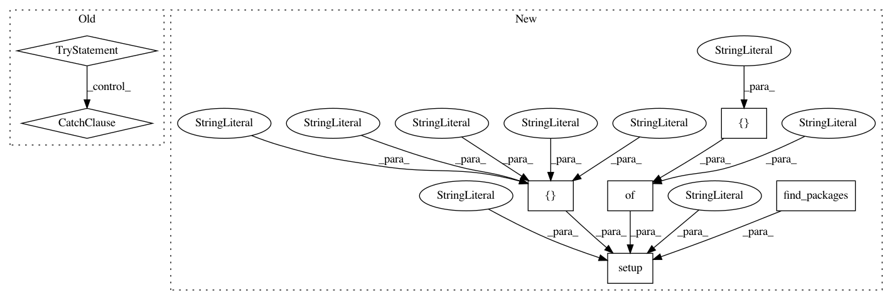

ee5e88bc0446986f6bc74080835e0566856d0e79,setup.py,,,#,9
Before Change
if os.getenv("WAVENET_VOCODER_BUILD_VERSION"):
version = os.getenv("WAVENET_VOCODER_BUILD_VERSION")
else:
try:
sha = subprocess.check_output(
["git", "rev-parse", "HEAD"], cwd=cwd).decode("ascii").strip()
version += "+" + sha[:7]
except subprocess.CalledProcessError:
pass
except IOError: // FileNotFoundError for python 3
pass
class build_py(setuptools.command.build_py.build_py):
def run(self):
self.create_version_file()
After Change
"wavenet_vocoder/version.py").load_module().version
setup(name="wavenet_vocoder",
version=version,
description="PyTorch implementation of WaveNet vocoder",
packages=find_packages(),
install_requires=[
"numpy",
"scipy",
"torch >= 0.4.1",
"docopt",
"joblib",
"tqdm",
"tensorboardX",
"nnmnkwii >= 0.0.11",
"scikit-learn",
"librosa",
],
extras_require={
"test": [
"nose",
"pysptk >= 0.1.9",
"matplotlib",
],
})
In pattern: SUPERPATTERN
Frequency: 3
Non-data size: 7
Instances
Project Name: r9y9/wavenet_vocoder
Commit Name: ee5e88bc0446986f6bc74080835e0566856d0e79
Time: 2019-09-07
Author: zryuichi@gmail.com
File Name: setup.py
Class Name:
Method Name:
Project Name: GPflow/GPflow
Commit Name: 7560936f09755b3fafe03ae1c5ccebb3c93984b6
Time: 2020-05-12
Author: st--@users.noreply.github.com
File Name: setup.py
Class Name:
Method Name:
Project Name: hyperopt/hyperopt-sklearn
Commit Name: e9a9f58f8856e2a9da0b7411213f20fe4e04e7f9
Time: 2018-10-18
Author: saubin@uwaterloo.ca
File Name: setup.py
Class Name:
Method Name: